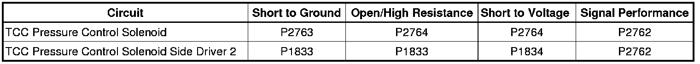
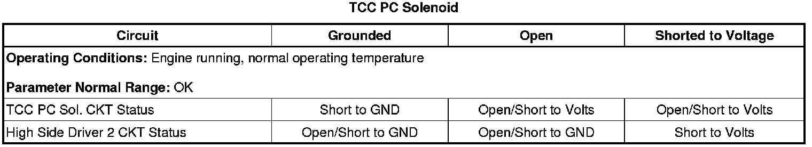

6L50/6L80/6L90 - Automatic Transmission
DTC P2762, P2763, or P2764
Diagnostic Instructions
* Perform the Diagnostic System Check - Vehicle (Initial Inspection and Diagnostic Overview) prior to using this diagnostic procedure.
* Review Strategy Based Diagnosis (Initial Inspection and Diagnostic Overview) for an overview of the diagnostic approach.
* Diagnostic Procedure Instructions (Initial Inspection and Diagnostic Overview) provides an overview of each diagnostic category.
DTC Descriptors
DTC P2762
- Torque Converter Clutch (TCC) Pressure Control Solenoid System Performance
DTC P2763
- Torque Converter Clutch (TCC) Pressure Control Solenoid Control Circuit Low Voltage
DTC P2764
- Torque Converter Clutch (TCC) Pressure Control Solenoid Control Circuit High Voltage
Diagnostic Fault Information

Typical Scan Tool Data

Circuit/System Description
The torque converter clutch (TCC) pressure control solenoid is part of the control solenoid (w/body and TCM) valve assembly and is not serviced separately. The TCM supplies 12 volts to the TCC pressure control solenoid through the high side driver 2 circuit. The TCM controls the TCC solenoid through the TCC solenoid control circuit. The normally low TCC pressure control solenoid flows fluid to the TCC when commanded ON and exhausts fluid when commanded OFF. The TCC solenoid regulates the transmission fluid pressure to the TCC.
Conditions for Running the DTC
* No DTCs P1833 or P1834.
* The engine run time is greater than 5 seconds.
* The TCC pressure control solenoid is commanded ON.
Conditions for Setting the DTC
P2762
The TCM detects an internal electrical performance malfunction of the TCC pressure control solenoid circuit and the actual TCC pressure does not equal the commanded TCC pressure for 300 milliseconds.
P2763
The TCM detects an internal low voltage electrical malfunction of the TCC pressure control solenoid control circuit for 300 milliseconds.
P2764
The TCM detects an internal high voltage electrical malfunction of the TCC pressure control solenoid control circuit for 300 milliseconds.
Action Taken When the DTC Sets
* DTC P2762 is a Type C DTC.
* DTCs P2763 and P2764 are Type B DTCs.
* The TCM inhibits 6th gear in Hot Mode.
* The TCM inhibits TCC.
* The TCM commands maximum line pressure.
* The TCM freezes transmission adaptive functions.
Conditions for Clearing the DIC/DTC
* DTC P2762 is a Type C DTC.
* DTCs P2763 and P2764 are Type B DTCs.
Diagnostic Aids
When attempting to set solenoid electrical DTCs, ensure the TCM is warmed up and the transmission is operated in 2nd gear long enough to ensure a 3°C (5°F) increase in TCM substrate temperature. This will place the TCM under the optimal conditions to test solenoid electrical DTCs.
Reference Information
Schematic Reference
Automatic Transmission Controls Schematics (Electrical Diagrams)
Connector End View Reference
Component Connector End Views (Connector Views)
Electrical Information Reference
* Circuit Testing (Component Tests and General Diagnostics)
* Connector Repairs (Component Tests and General Diagnostics)
* Testing for Intermittent Conditions and Poor Connections (Component Tests and General Diagnostics)
* Wiring Repairs (Component Tests and General Diagnostics)
Description and Operation
Transmission Component and System Description (Transmission Component and System Description)
DTC Type Reference
Powertrain Diagnostic Trouble Code (DTC) Type Definitions (Diagnostic Trouble Code Descriptions)
Scan Tool Reference
Control Module References (Programming and Relearning) for scan tool information
Circuit/System Testing
1. Ensure the transmission fluid temperature is between 50-80°C (122-176°F).
2. Operate the vehicle in 2nd gear long enough to ensure at least a 3°C (5°F) rise in TCM temperature, then operate the vehicle to ensure TCC engagement for 5 seconds.
3. Observe the scan tool data parameter TCC PC Sol. CKT Status, the parameter should display OK.
• If the parameter displays Open, Short to Volts, Short to GND or if the DTC resets, perform the Control Solenoid Valve and Transmission Control Module Assembly Inspection (Control Solenoid Valve and Transmission Control Module Assembly Inspection) .
• If no concerns are found during the inspection, replace the control solenoid (w/body and TCM) valve assembly.
Repair Instructions
Perform the Diagnostic Repair Verification (Verification Tests) after completing the diagnostic procedure.
* Control solenoid (w/body and TCM) valve assembly replacement. Refer to Control Module References (Programming and Relearning) for replacement, setup, and programming.
* Perform the Service Fast Learn Adapts (Programming and Relearning) if internal transmission repairs are performed.